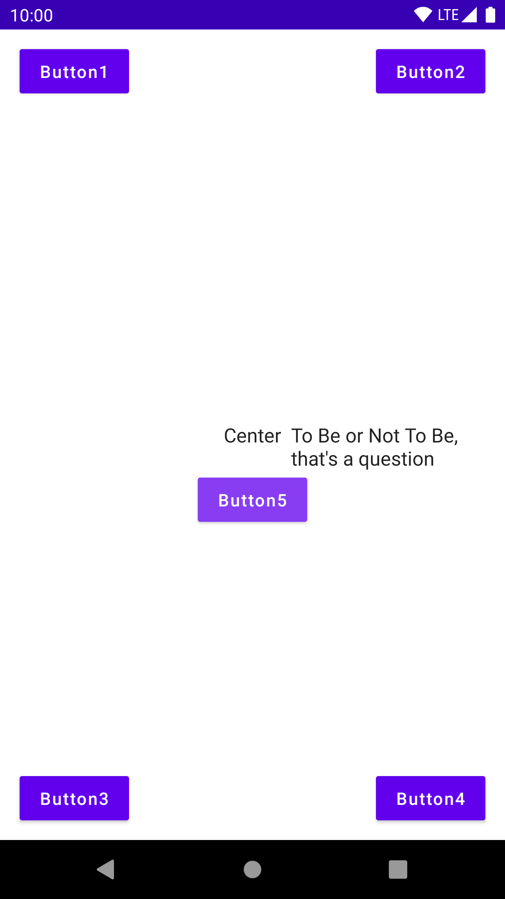
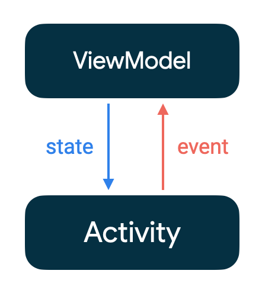

跟随官方文档学习 Compose 的第二篇。第一篇：Thinking in Compose。
Layout in Compose
Theming
Android 之前的主题系统非常复杂，而且也很难用，我相信这是大多数开发者的共识。Android 开发团队当然也注意到了这一点，在设计 Compose 时，抛弃了（但也兼容）旧的系统。因此，在使用 Compose 时，应用 Material Design 主题或者自定义主题变得前所未有地简单和高效。
Compose 框架内置了 Material Design 主题，所有的组件都构建在该主题之上，与此同时，也非常易于自定义。MaterialTheme 由 color、typography 和 shape 三部分组成，所有的主题都是以树型的方式自顶向下应用到组件之上的，多个主题可以嵌套使用，因此，我们可以非常灵活地应用、修改、重用主题。又因为 Compose 中自定义组件非常常见，所以我们可以修改、应用主题到单个组件的级别。
Modifier
Modifier 有点像 React-Native 中的 StyleSheet，你可以使用它修改 composable 组件的外观、行为，添加额外信息等。Modifier 和普通的 Kotlin 对象没什么区别，可以作为变量使用，也可以和其它 Modifier 组合起来使用。
相比传统的 View 的属性，Modifier 还有一个额外的优势，那就是可以根据当前上下文推断出那些属性可用，防止你用错。另外，Modifer 属性应用的顺序也会直接影响到组件的外观。比如，Modifier.padding(8.dp).clickable{} 和 Modifier.clickable{}.padding(8.dp) 的可点击区域的大小是不同的，前者可点击区域在 padding 之内，后者可点击区域包括了 padding。
Slots APIs
Compose 中绝大多数内置组件的最后一个参数都是 content: @Composable () -> Unit，结合 Koltin 的 trailing lambda 的语法，我们就可以很方便地写出相互嵌套的组件：
1 | Button { |
Custom Layout
Compose 中最基础的组件是 Column、Row 和 Box，通过它们我们可以组合出复杂的布局。但是，我们有时候可能也会用到一些更复杂的布局，这个时候就需要通过自定义 Layout 组件了。
Compose 中的布局原则
每个 composable 函数在执行之后都会释放出 UI 组件并被添加到视图树中，每个元素都有一个父元素以及多个（可能的）子元素，而且该元素有一个相对父元素的坐标 (x,y) 和大小 (width & height)。每个元素在被添加到视图树之前，都需要被测量一次，并且需要满足父元素的限制条件，比如最小和最大的宽高。如果元素具有子元素，那么还需要测量其所有的子元素决定其自身的大小之后再被绘制出来。
Compose 不允许元素多次测量，也就是说所有的元素只能测量一次，这么做的原因当然是为了性能考虑。因为 recomposition 的存在，如果同一个元素多次被测量会造成极大的性能浪费，尤其是在 UI 树嵌套很深的情况下，如果所有元素都测量多次以上，那么整个视图树 recomposition 的性能消耗将是巨大的。
自定义 LayoutModifier
我们可以通过实现（扩展函数）Modifler 的 layout() 函数来修改如何显示一个元素。
1 | fun Modifier.customLayoutModifier(...) = Modifier.layout { measurable, constraints -> |
实现 LayoutModifier 需要用到两个参数：
measurable：代表需要被测量和放置的元素constraints：元素最小和最大的宽和高等
除此之外，我们通过调用 layout() 返回一个 MeasureResult 供 LayoutModifer 确定测量结果（大小、对齐方式、位置等）：
1 | fun Modifier.customLayoutModifier(...) = Modifier.layout { measurable, constraints -> |
注意在 layout() 函数中，必须调用 placeXXX() 函数，否则元素将不可见。
自定义 Layout
除了自定义如何排列元素之外，我们还可以自定义 Layout。与自定义 LayoutModifier 类似，首先需要测量所有子元素的位置，然后根据 constraints 放置到合适的位置。
1 |
|
Constraint Layout
尽管在 Compose 框架中，布局嵌套的深度对性能的影响并不是太大，但是我们依旧可以在一些布局复杂的场景中使用 Constraint Layout 来简化布局的实现。
1 |
|

Compose 中的 Constraint Layout 的用法和 View 系统中的 ConstraintLayout 的用法差不多，主要包括以下几个部分：
- 使用
createRef()或者createRefs()来创建引用，其中parent是默认会被创建的引用 - 使用
Modifier.constrainAs(referenceName)来创建约束内容 - 使用
linkTo、centerHorizontallyTo等方法约束布局，还可以使用width等自定义Dimension - 使用
createXxxBarrier、createGuidelineFromXxx、createHorizontalChain等方法创建帮助约束
除此之外，我们还可以使用动态约束，比如下面这个例子：
1 |
|
Intrinsic
之前说过自定义布局的时候，Compose 只允许我们测量一次，否则会报错，但是，当我们需要在 measure 之前就知道布局的宽高信息的时候，该怎么办呢？这个时候就需要用到 Intrinsic 信息了，包括：
(min|max)IntrinsicWidth：在当前高度下，最小或最大的可用布局宽度(min|max)IntrinsicHeight：在当前宽度下，最小或最大的可用布局高度
使用例子：
1 |
|
此时，Row 的高度是由子元素中高度最高的元素决定的，而 Divider 因为使用了 fillMaxHeight() 所以其高度会填充此最小高度。
State in Compose
什么是 State
State in an application is any value that can change over time.
For example it may be a value stored in a Room database, a variable on a class, or even the current value read from an accelerometer.
官方的解释是，应用中任何会随时间发生变化的值都可以被称作 State，比如网络状态，应用数据，UI 动画等等。
创建 State
我们可以通过使用 mutableStateOf() 给 composable 函数添加内部状态，当状态改变的时候，依赖该状态的 composable 函数会自动再次执行。创建 State 主要有以下几种方法：
val state = remember { mutableStateOf(default) }，直接取得MutableStatevar value by remember { mutableStateOf(default) }，通过关键字by，以委托的方式初始化，需要导入androidx.compose.runtime.getValue和androidx.compose.runtime.setValueval (value, setValue) = remember { mutableStateOf(default) }，通过解构MutableState获得 setter 和 getter 函数
记住 State
注意到上面创建 State 的方法中，全都使用了 remember() 函数，该函数用于记住该状态，如果不记住状态，那么该状态每次都会在 recomposation 的过程中被重新初始化。
1 | val color = remember(key1 = todo.id, calculation = { randomTint() }) |
remember() 函数接受 key 和 calculation 函数，如果不传 key 则只有在 composition 才调用 calculation，否则会先比较 key 是否发生变化，然后再决定是否调用。
在使用 remember() 之前，需要问自己的一件事是：该状态是否有可能需要暴露给外界？如果是，那么就把它定义为 composable 函数的参数；否则，才使用局部变量。
另外，还需要注意到，当 Compose 组件被移除的时候，其「记住」的状态也会被移除，这在 LazyColumn 等组件中尤其需要注意，当列表长度很长并在可见区域之外时，组件可能会被移除掉并在回到原位置后重新渲染组件，因此记住的状态也会丢失。所以 remember() 只适用于记住一些暂时的状态。
单向数据流
Unidirectional data flow，即事件向上流动（事件输入），状态向下流动（更新状态）。比如 ViewModel 中通过方法调用传送事件，最后通过 LiveData 将状态更新通知给 UI。

Compose 中所有的内置组件都被设计成是单向数据流的，也即都是 Stateless 的。
结合 ViewModel 的使用
为了实现单向数据流和达到解耦的目的，我们可以将事件处理放到 ViewModel 中，再通过 LiveData 实现对状态更新的监听：
1 | class CounterViewModel : ViewModel() { |
可以看到，这里关键的一步是对 count 值的监听，使用 observeAsState() 将 ViewModel 中的 LiveData 转换为可触发 recomposition 的 State。
状态提升
有时候，composable 函数可能需要将状态暴露给调用方，比如调用方需要通过获取状态进行一些操作或者为了方便测试，这种做法称为状态提升（state hoisting）。状态提升可以避免重复状态的出现以及引入 bug，因为如果在一个 composable 函数中使用了过多状态，通常会增加代码复杂度从而使得代码难以维护和容易产生 bug。
我们可以通过在 composable 函数中添加状态值（Value）和状态改变器（onValueChange: (T) -> Unit）来实现状态提升：
1 |
|
使用状态提升的好处是只有创建该 composable 函数的地方，才能修改其状态。我们可以通过状态提升将一个 Stateful 组件转换成一个 Stateless 组件，而 Stateless 组件的优势是可以更方便地组合重用。
另外，在使用状态提升时，第一步需要考虑组件的状态树，尤其是在组件是由多个子组件嵌套形成的时候，需要考虑该组件的使用场景，以及应该将该状态提升到哪一级。